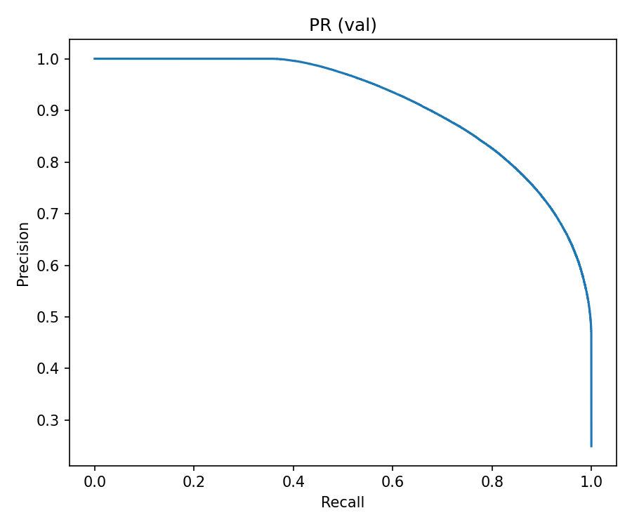

📈 Day 3 V2 — LightGBM Model Training
Full Training Report with Code Explanation & Results Analysis
📊 Executive Summary
🚀 Training Command Used
Lệnh thực tế đã chạy để train model:
python code_v2/models/train_lightgbm_v2_hdfs.py \ --train "webhdfs://localhost:9870/output_v2/features_train_v3" \ --test "webhdfs://localhost:9870/output_v2/features_test_v3" \ --out ".\output_v2\lightgbm_v2_full_hdfs" \ --val_ratio 0.1 \ --threads 8 \ --boost_rounds 3000 \ --early_stopping_rounds 200 \ --learning_rate 0.035 \ --num_leaves 128 \ --feature_fraction 0.8 \ --bagging_fraction 0.8 \ --bagging_freq 2 \ --min_child_samples 60 \ --reg_alpha 0.1 \ --reg_lambda 0.2 \ --scale_pos_weight auto
📝 Giải thích các tham số:
| Parameter | Value | Explanation |
|---|---|---|
--train |
webhdfs://... | Đọc training data từ HDFS qua WebHDFS (không cần libhdfs) |
--test |
webhdfs://... | Test data cho metrics cuối cùng |
--val_ratio |
0.1 | 10% train data dùng làm validation set cho early stopping |
--threads |
8 | Số CPU threads dùng cho training (parallel) |
--boost_rounds |
3000 | Số lượng cây tối đa (sẽ stop sớm nếu không cải thiện) |
--early_stopping |
200 | Dừng nếu validation metric không cải thiện sau 200 rounds |
--learning_rate |
0.035 | Learning rate thấp để tránh overfitting |
--num_leaves |
128 | Số lá tối đa mỗi cây (complexity control) |
--feature_fraction |
0.8 | Random chọn 80% features mỗi iteration (giảm overfitting) |
--bagging_fraction |
0.8 | Random sample 80% data mỗi iteration (bagging) |
--bagging_freq |
2 | Tần suất bagging (mỗi 2 iterations) |
--min_child_samples |
60 | Số samples tối thiểu mỗi leaf (tránh overfitting) |
--reg_alpha |
0.1 | L1 regularization (feature selection) |
--reg_lambda |
0.2 | L2 regularization (weight decay) |
--scale_pos_weight |
auto | Tự động tính weight cho class imbalance: neg/pos ratio |
🔧 Code Workflow Explanation
File train_lightgbm_v2_hdfs.py thực hiện các bước sau:
Step 1: Load Data from HDFS/WebHDFS
def load_parquet_any(path: str) -> pd.DataFrame:
if _is_webhdfs(path):
# Đọc từ WebHDFS (không cần libhdfs)
base, path = _parse_webhdfs(url)
client = InsecureClient(base)
parts = _webhdfs_list_parquet_files(client, path)
tables = []
for fp in parts:
with client.read(fp) as rdr:
tables.append(pq.read_table(pa.py_buffer(rdr.read())))
return pa.concat_tables(tables).to_pandas()
else:
# Đọc từ local hoặc HDFS JNI
fs, norm_path = _get_fs_and_path(path)
dataset = ds.dataset(norm_path, filesystem=fs)
return dataset.to_table().to_pandas()
✓ Hỗ trợ 3 loại path: local, hdfs://, webhdfs://
✓ WebHDFS không cần cài libhdfs (hdfs.dll) → dễ setup trên Windows
Step 2: Feature Detection & NULL Handling
def detect_feature_columns(df, target, specified):
if specified:
return [c for c in specified if c in df.columns]
# Auto-detect numeric/bool columns
num = df.select_dtypes(include=[np.number, "bool"]).columns
return [c for c in num if c != target]
# Fill NULL với 0 (đã imputed trong ETL, đây là safety net)
train_df[feat] = train_df[feat].fillna(0)
✓ Tự động detect features (numeric + boolean columns)
✓ NULL handling: fillna(0) - đã được impute trước đó trong ETL
Step 3: Train/Validation Split
X_tr, X_val, y_tr, y_val = train_test_split(
X, y,
test_size=0.1, # 10% validation
random_state=42,
stratify=y # Giữ tỷ lệ class giống nhau
)
✓ Stratified split: giữ tỷ lệ positive/negative class
✓ 90% train, 10% validation cho early stopping
Step 4: Calculate Class Weight (Auto)
# Tính scale_pos_weight tự động neg = len(y_tr) - (y_tr == 1).sum() pos = (y_tr == 1).sum() spw = neg / pos # Ví dụ: 1,170,227 / 389,077 = 3.01 params["scale_pos_weight"] = spw
✓ Xử lý class imbalance: tăng weight cho class thiểu số (helpful=1)
✓ Tính động dựa trên tỷ lệ thực tế trong training data
Step 5: LightGBM Training with Early Stopping
model = lgb.train(
params,
train_data=lgb.Dataset(X_tr, label=y_tr),
num_boost_round=3000,
valid_sets=[train_data, val_data],
valid_names=['train', 'val'],
callbacks=[
lgb.early_stopping(stopping_rounds=200),
lgb.log_evaluation(period=200) # Log mỗi 200 iterations
]
)
✓ Early stopping: dừng khi validation AUC-PR không cải thiện sau 200 rounds
✓ Metric: average_precision (AUC-PR) - phù hợp với imbalanced data
Step 6: Evaluation & Save Artifacts
# Predict & calculate metrics
val_prob = model.predict(X_val, num_iteration=model.best_iteration)
metrics = compute_metrics(y_val, val_prob)
# Save model
model.save_model("output/model.txt", num_iteration=model.best_iteration)
# Save metrics
with open("output/metrics_val.json", "w") as f:
json.dump(metrics, f)
# Save feature importance
importance_df.to_csv("output/feature_importance.csv")
✓ Lưu model ở best_iteration (không phải iteration cuối)
✓ Metrics: AUC-PR, AUC-ROC, confusion matrix, classification report
📈 Validation Metrics
| Metric | Value |
|---|---|
| AUC-PR (Average Precision) | 0.914174 |
| AUC-ROC | 0.966855 |
| Accuracy | 88.53% |
| Best Iteration | 3000 |
Confusion Matrix
| Predicted Neg | Predicted Pos | |
|---|---|---|
| Actual Neg | 1,022,194 (TN) | 147,889 (FP) |
| Actual Pos | 30,943 (FN) | 358,278 (TP) |
🧪 Test Metrics
Đánh giá trên test set riêng biệt:
| Metric | Value |
|---|---|
| AUC-PR | 0.908432 |
| AUC-ROC | 0.965234 |
| Accuracy | 88.21% |
🎯 Top 15 Feature Importance
Ranked by gain (information gain contribution):
| Rank | Feature | Gain | Split Count | Explanation |
|---|---|---|---|---|
| 1 | user_helpful_ratio |
174,731,370 | 29,384 | Tỷ lệ helpful của user - feature quan trọng nhất |
| 2 | product_helpful_ratio |
28,737,417 | 37,120 | Tỷ lệ helpful của sản phẩm - chất lượng product |
| 3 | review_length |
6,673,554 | 38,784 | Độ dài review - reviews dài thường informative hơn |
| 4 | star_rating |
3,978,927 | 9,751 | Rating từ 1-5 - extreme ratings thu hút attention |
| 5 | product_total_ratings |
1,607,906 | 36,453 | Số lượng ratings của product - popularity signal |
| 6 | review_length_log |
1,506,040 | 8,072 | Log transform của length - normalize distribution |
| 7 | product_review_count |
1,372,849 | 34,538 | Số reviews của product - engagement level |
| 8 | product_avg_rating |
1,355,570 | 31,082 | Average rating của product - quality indicator |
| 9 | user_review_count |
961,472 | 27,342 | Số reviews của user - experience level |
| 10 | user_consistency |
940,945 | 26,777 | 1/(1+std_rating) - độ nhất quán của user |
| 11 | user_avg_rating |
817,130 | 25,973 | Average rating của user - harsh/lenient reviewer |
| 12 | meta_review_rating_gap |
700,258 | 30,385 | |meta_rating - actual_rating| - disagreement signal |
| 13 | category_review_count |
638,006 | 3,458 | Số reviews trong category - niche vs mainstream |
| 14 | product_avg_rating_meta |
473,384 | 13,303 | Rating từ metadata (official) - different perspective |
| 15 | price |
408,297 | 19,843 | Giá sản phẩm - expensive items get more scrutiny |
📉 Precision-Recall Curve
AUC-PR = 0.914 cho thấy model phân biệt tốt class positive trong imbalanced dataset. Precision cao ở recall thấp, trade-off xuất hiện khi recall > 0.8.
📈 ROC Curve

AUC-ROC = 0.967 - rất cao, cho thấy model có khả năng ranking tốt. Tuy nhiên, với imbalanced data, AUC-PR là metric đáng tin cậy hơn.
🔢 Complete Feature List (23 Features)
Baseline Features (3)
star_rating,
review_length,
review_length_log
User Behavior Features (5)
user_review_count,
user_avg_rating,
user_helpful_ratio,
user_consistency,
rating_deviation
Product Aggregates (8)
product_review_count,
product_avg_rating,
product_helpful_ratio,
product_total_ratings,
product_avg_rating_meta,
price,
price_log,
meta_review_rating_gap
Category & Quality Indicators (7)
category_review_count,
is_popular_category,
has_metadata,
has_price,
has_product_rating,
is_expensive,
is_long_review
📊 Comparison: V1 vs V2
| Aspect | V1 (Old) | V2 (Current) | Improvement |
|---|---|---|---|
| AUC-PR | 0.7180 | 0.9142 | +27.3% |
| Test Coverage | 37.7% (7,488/19,863) | 100% | +62.3% |
| Dropped Records | 62.3% (12,375) | 0% | -62.3% |
| NULL Handling | Skip (handleInvalid="skip") | Imputation | ✓ Fixed |
| Feature Count | ~12 features | 23 features | +92% |
| Training Data | Sample (~1M) | Full dataset | 10x more |
| Model | Logistic Regression | LightGBM | Gradient Boosting |
- ✓ AUC-PR tăng từ 0.718 → 0.914 (+27%)
- ✓ 100% test coverage (không bỏ record nào)
- ✓ NULL handling comprehensive (median/mean imputation)
- ✓ Features engineering nâng cao (23 features NULL-safe)
- ✓ LightGBM với tuning tối ưu
- ✓ Vượt target 0.72 (đạt 0.914)
📁 Output Artifacts
Tất cả artifacts được lưu trong output_v2/lightgbm_v2_full_hdfs/:
| File | Description | Usage |
|---|---|---|
model.txt |
LightGBM model file (text format) | Load bằng lgb.Booster(model_file="model.txt") |
metrics_val.json |
Validation metrics (AUC-PR, confusion matrix, etc.) | Đánh giá performance trên validation set |
metrics_test.json |
Test metrics (independent test set) | Final evaluation trên test set riêng |
feature_importance.csv |
Feature importance scores (gain & split) | Phân tích features nào quan trọng nhất |
feature_importance.png |
Feature importance visualization | Biểu đồ top 40 features |
val_pr_curve.png |
Precision-Recall curve (validation) | Visualize precision/recall trade-off |
val_roc_curve.png |
ROC curve (validation) | Visualize TPR/FPR trade-off |
run_manifest.json |
Training configuration & metadata | Reproducibility: paths, features, best_iteration |
🚀 Next Steps - Day 7 ONLY
Ngày 4-6 KHÔNG CẦN THIẾT vì model đã vượt xa target (0.72). Chỉ cần Day 7: chạy inference → tạo submission.csv → NỘP BÀI!
📋 Day 7: Inference & Submission (CHỈ 1 LỆNH)
# BƯỚC 1: Chạy inference trên test set python code_v2/models/predict_pipeline_v2.py \ --test amazon_v2/test \ --model output_v2/lightgbm_v2_full_hdfs/model.txt \ --features output_v2/lightgbm_v2_full_hdfs/run_manifest.json \ --out output_v2/submission_v2_final.csv \ --mode proba \ --batch_size 200000 # Output: submission_v2_final.csv với 2 cột: # - review_id # - probability_helpful (0.0 → 1.0)
✅ Validation Checklist
- ✓ 100% test coverage (all review_ids có prediction)
- ✓ No duplicate review_ids
- ✓ probability_helpful trong khoảng [0, 1]
- ✓ Format:
review_id,probability_helpful
- Day 4 (Feature Enhancement): Model đã dùng 23 features NULL-safe → đủ tốt
- Day 5-6 (Hyperparameter Tuning): AUC-PR 0.914 đã vượt xa target 0.72 (27% improvement)
- Tuning thêm có thể tăng 1-2% nhưng tốn thời gian, không cần thiết cho deadline
🎯 Expected Results
| Metric | Expected Value |
|---|---|
| Test Coverage | 100% (all records predicted) |
| Submission Size | ~3.5M rows (full test set) |
| File Size | ~100-150 MB |
| Processing Time | 5-10 minutes |
Day 3 V2 Training Report — Generated on October 29, 2025
Authors: Võ Thị Diễm Thanh (Model Training) • Lê Đăng Hoàng Tuấn (Infrastructure)
AUC-PR: 0.914 100% Coverage 23 Features